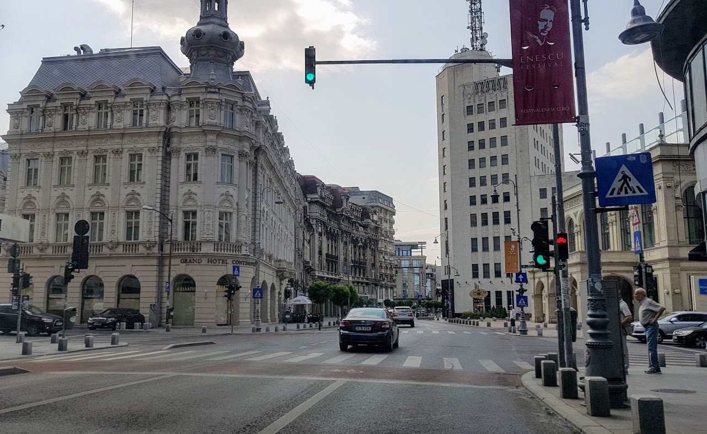

|
Transport

Sistemul de transport public din București este cel mai mare din România. Este compus din sistemul de metrou de 77 km operat de către Metrorex și rețeaua transportului de suprafață – autobuze (120 de linii), troleibuze (15 linii) și tramvaie (24 de linii) – operată de către RATB. Adițional, există și microbuze private care fac legătura cu comunele învecinate. În 2016, RATB a avut 438 de milioane de călătorii.
Subsolul capitalei este traversat de patru magistrale (M1, M2, M3 și M4), M1 și M2 fiind cele mai mari și mai cuprinzătoare. M1 este magistrala care are conexiuni cu toate celelalte linii de metrou. Metroul reprezintă doar 5% din rețeaua de transport public și este folosit zilnic de aproape un sfert din populația zonei București-Ilfov, adică 600.000 de persoane.
Rețeaua de străzi a Capitalei cuprinde 5.340 de străzi, cu o lungime totală de 1.820 km și o suprafață totală de aproape 20.000 m². Aceasta este centrată în jurul unei serii de bulevarde de mare capacitate, care, în general, radiază din centrul orașului până la periferie. Axele principale (nord/sud, est/vest și nord-vest/sud-est) și două inele (interior și exterior) contribuie la reducerea aglomerației din trafic. Străzile în municipiu sunt de obicei înțesate în timpul orelor de vârf din cauza creșterii numărului de mașini în ultimii ani. În fiecare zi, peste un milion de vehicule circulă în interiorul orașului. Aceasta a rezultat în apariția gropilor, care acum sunt considerate ca fiind cea mai mare problemă de infrastructură a Bucureștiului. La acestea se adaugă lipsa spațiilor de parcare, dar și subdimensionarea infrastructurii pietonale.
|